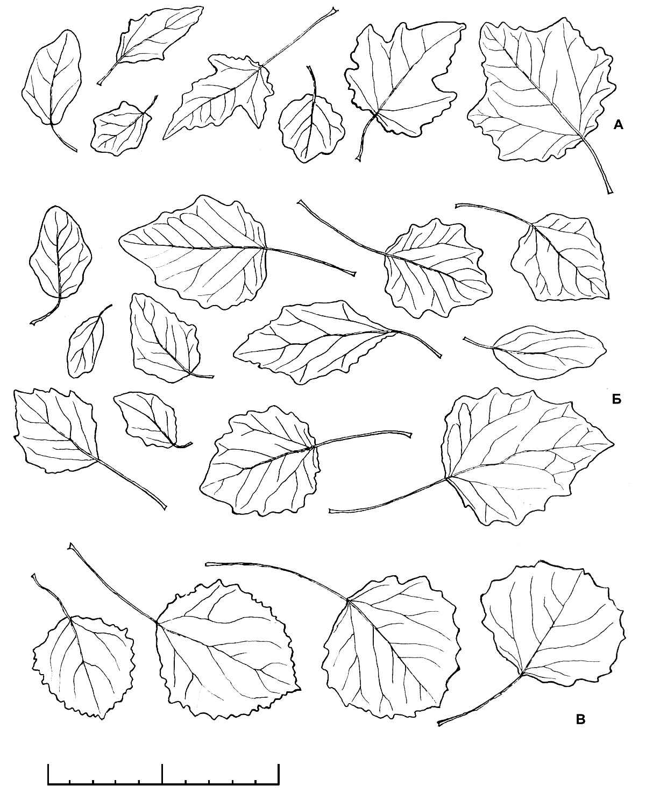
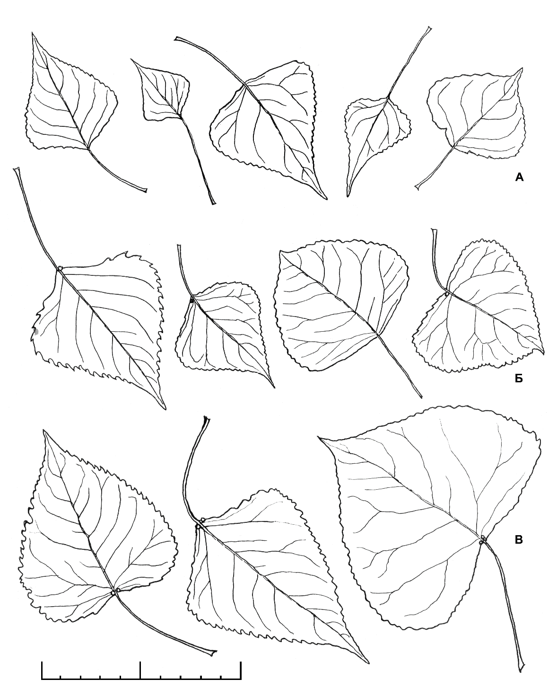
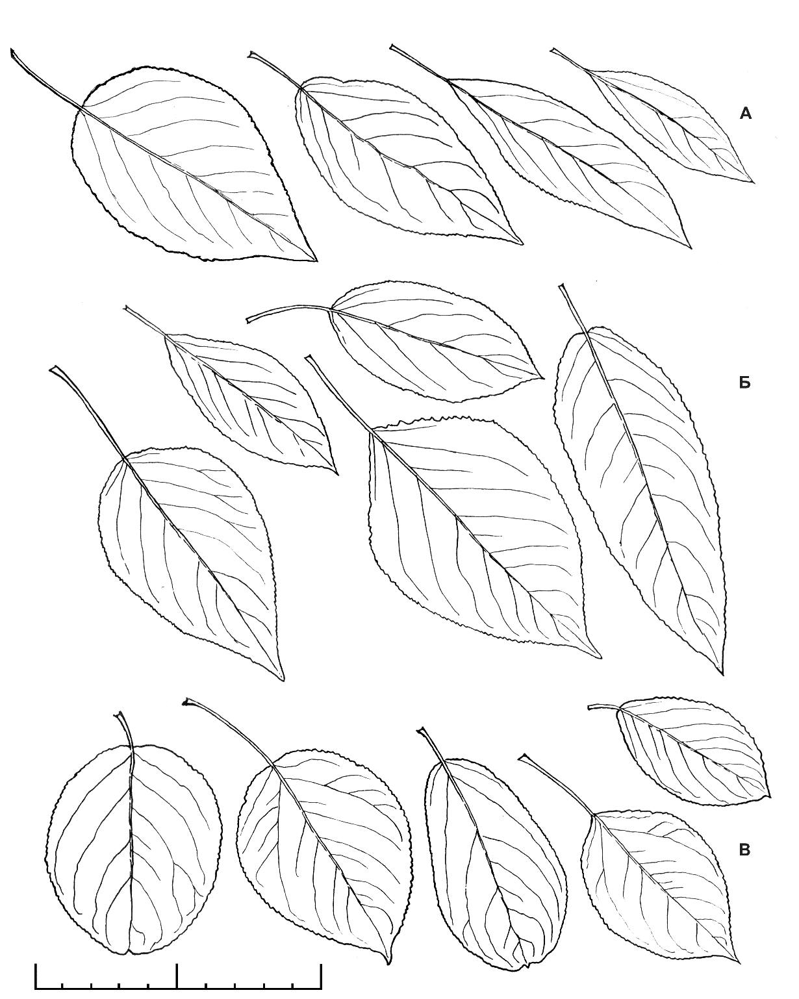
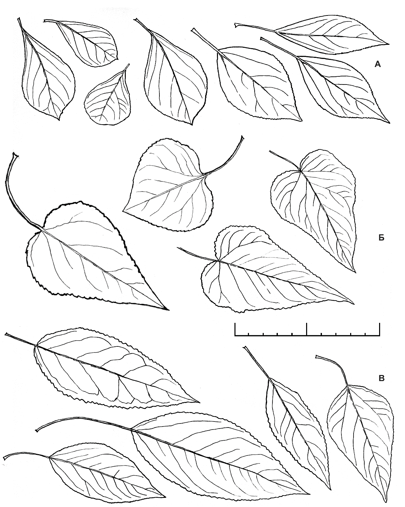
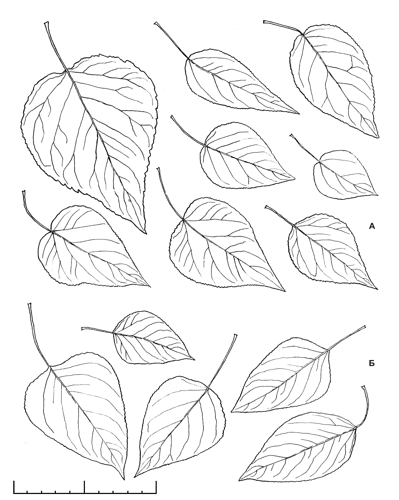
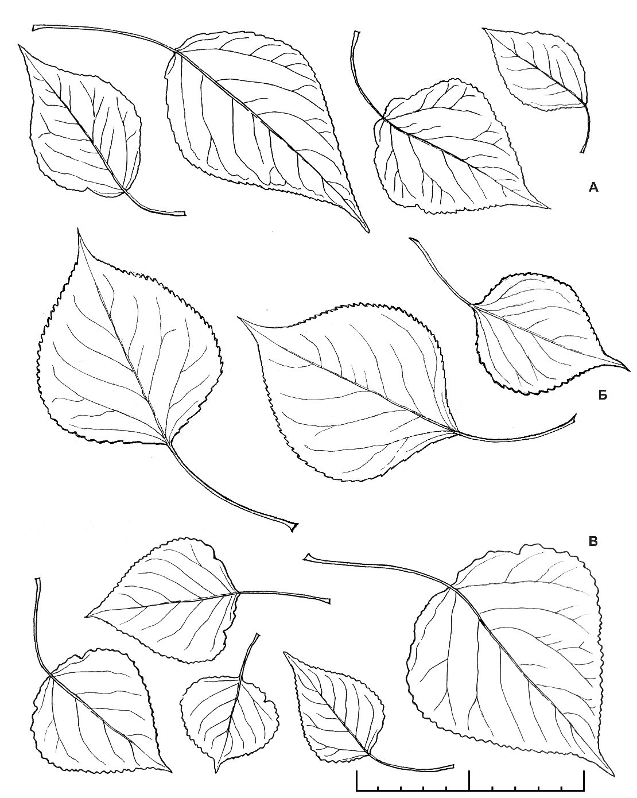
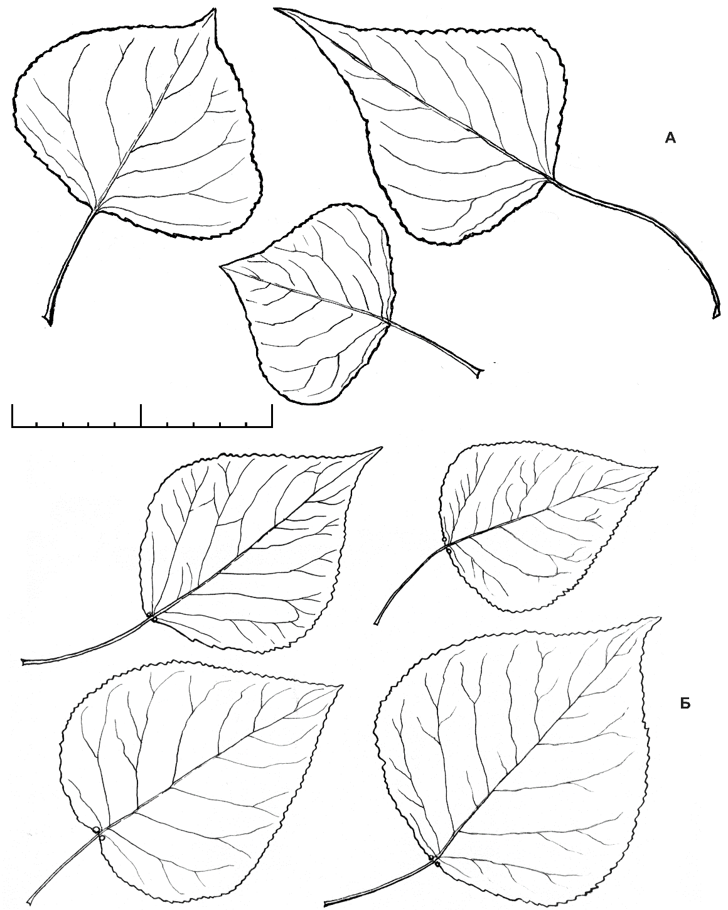
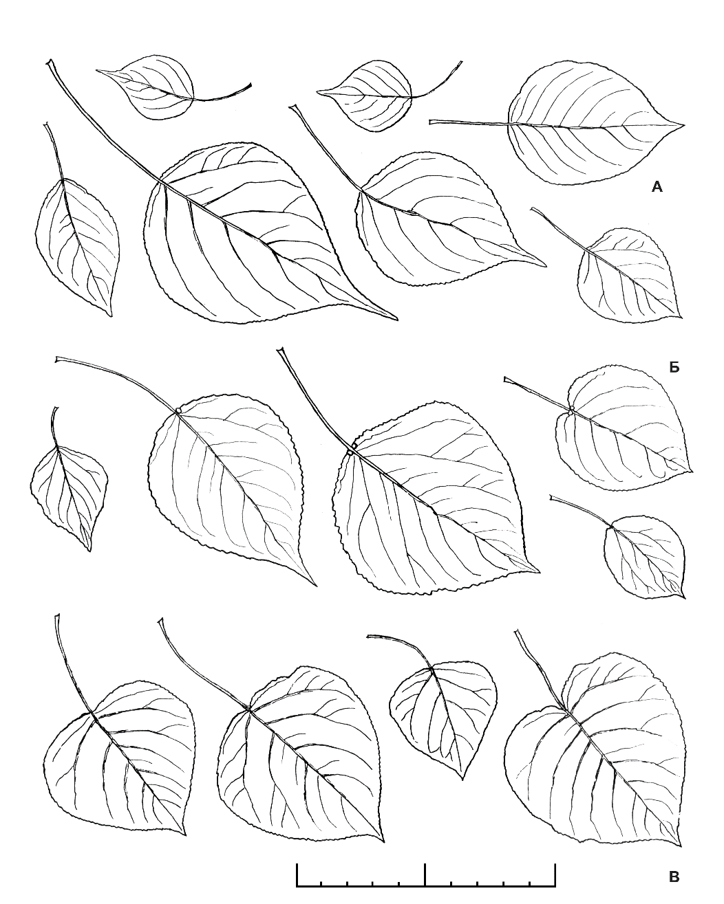
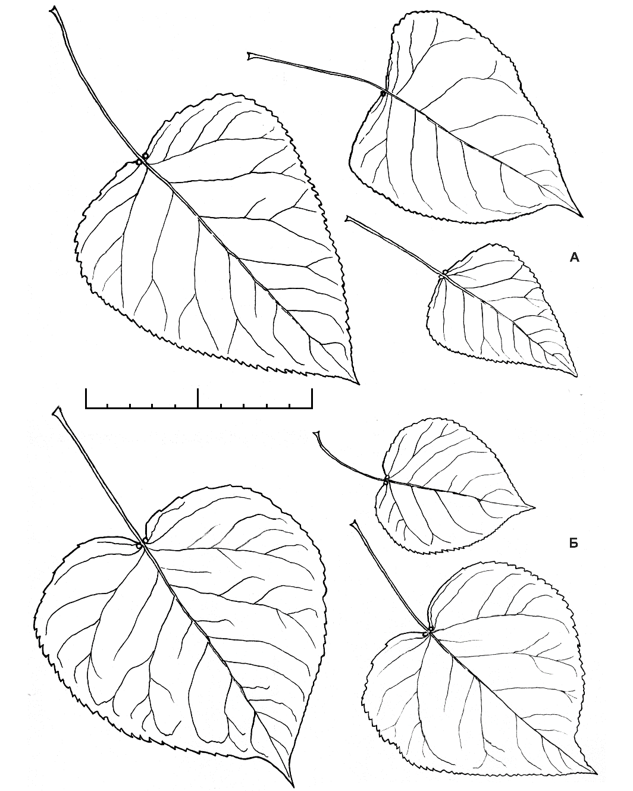

Страницы авторов "Тёмного леса"
Литературный Кисловодск и окрестности
Пишите нам! temnyjles@narod.ru
Выходные данные:
Чужеродная флора Московского региона: состав, происхождение и пути формирования / С.Р. Майоров, Ю.Е. Алексеев, В.Д. Бочкин, Ю.А. Насимович, А.В. Щербаков. М.: КМК, 2020. 576 с., портрет, цв. вклейка 197 с. [Тираж 600 экз.].
Фрагмент о тополях написан, в основном, Ю.А. Насимовичем, что, по крайней мере, в первом издании было указано, т.к. С.Р. Майоров не всегда был убеждён в моей правоте, хотя особенно и не спорил. Редактировал С.Р. Майоров. Книга два года лежала, но устарели только некоторые представления о тополе невском. Пока лучше этим названием не пользоваться, относя соответствующие случаи к тополю сибирскому. Дело в том, что в Петербурге удалось восстановить конкретный культивар с этим названием, т.е. возможна путаница.
Ю.Насимович
Тополя - одна из самых сложных групп культивируемых и адвентивных видов Средней России. Трудность разграничения и определения видов обусловлена, в частности, легкостью межвидовой гибридизации.
Все произрастающие у нас виды местных и культивируемых тополей естественно объединяются в 2 подрода. Типовой подрод Populus включает белые тополя (Populus) и осины (Trepidae Dode), эти группы рассматриваются как две секции или, чаще, объединяются в одну секцию. Подрод Tacamahaca (Spach) Penjkovsky включает секции бальзамических тополей - Tacamahaca Spach, черных тополей - Aigeiros Duby (Rehder, 1949; Цвелёв, 2001е; Скворцов, 2006). Гибриды между представителями разных подродов в России неизвестны. Внутри обоих подродов имеются всевозможные внутрисекционные и межсекционные гибриды, которые не стабилизировались, но, согласно устоявшейся традиции, рассматриваются в качестве гибридогенных видов. Межсекционные гибриды, как правило, приписываются к той или иной секции (Комаров, 1936б; Rehder, 1949; Цвелёв, 2001е; и др.), но мы рассматриваем их отдельно.
В систематике и номенклатуре тополей много неясностей. Некоторые гибридные таксоны были описаны недостаточно полно и неполно собраны (без указания на этикетках всех дополнительных признаков). Есть случаи, когда в качестве "типовых образцов" использовались живые деревья (например, выделенные Р.И. Шредером, работавшим в Московской сельскохозяйственной академии на рубеже XIX-XX вв.). Эти деревья погибли, и ряд широко известных бинарных названий нельзя уверенно отнести к тем или иным культиварам. Кроме того, многие гибриды многократно возникали или сознательно создавались в разных точках планеты, получали там бинарные названия и при этом неполно описывались селекционерами-практиками, из-за чего имеются серьезные номенклатурные проблемы с выявлением приоритетных названий. Поэтому наш обзор не претендует на законченность.
Составляют не более 3-4% тополей городского озеленения. У поросли и подроста высотой до 2-3 м листья снизу, черешки, почки и молодые побеги всегда со сплошным белым войлоком; листья обычно 3-5-лопастные или неправильной формы (неправильно-овальные, эллиптически-продолговатые, разной формы, но без правильной округлости); почки не смолистые. С возрастом деревьев у белых тополей (P. alba и его гибрид с P. bolleana) листья уменьшают лопасти и чуть зеленеют, но в остальном остаются такими же; у гибридов с осиной (P. × canescens и P. × jablocowii) - округляются и постепенно сереют, то есть почти теряют опушение и белый налет.
Типичная форма с раскидистой кроной. Дер. Эрг. Колон. Евроазиатский вид (Правдин, 1951). В Европейской России естественный ареал простирается на северо-запад до Белгородской, Воронежской, Тамбовской областей, а по Волге до Нижегородской области (Скворцов, 2006). Московские исследователи за тополь белый обычно принимали тополь сереющий, и мы не доверяем литературным указаниям на наличие вида в культуре в тех или иных точках Москвы и Подмосковья. После долгих поисков нам удалось найти в Москве, на зарастающем пустыре близ р. Раменки, 10-метровое деревце данного вида, все листья которого соответствовали признакам P. alba. Дерево окружал обильный подрост корнеотпрыскового происхождения (наблюдение Ю.А. Насимовича и Д.А. Медведевой в 2010 г.). Было также несколько похожих, но менее убедительных находок (MHA). Таким образом, P. alba культивируется в Московском регионе, иногда встречается на нарушенных природных территориях и дает обильную корневую поросль, но это бывает гораздо реже, чем считается.
Дер. Эрг. Колон. Встречается на Украине, юге Европейской России и на Кавказе в местах совместного произрастания осины и тополя белого (Комаров, 1936б; Скворцов, 2006). Но культивируемый у нас гибрид - это культивар, созданный А.С. Яблоковым в XX веке. Крона раскидистая. Отличается от P. alba постепенно сереющими и округляющимися листьями. В культуре впервые указан для Петровско-Разумовского (1942, Каден - MCXA). Теперь обычен в озеленении, дает обильную корневую поросль и почти дичает, что наблюдалось в Лосином Острове, Кусковском лесопарке, Люблине, Загорье, на Крылатских холмах, Щукинском полуострове.
Дер. Эрг. Эфем. Культивар, созданный А.С. Яблоковым, - гибрид осины и среднеазиатского P. bolleana. Может рассматриваться как пирамидальная форма P. × canescens, если считать P. alba и P. bolleana формами того же вида. Часто используется в озеленении. Найден в Москве вне городских посадок: "природная территория на р. Лихоборке ниже Октябрьской ж. д., на валу [зарастающей] газотрассы, одно узкопирамидальное дерево высотой 8 м,... 23.09.2010. Ю.А. Насимович" (MHA).
|  | Рис. 58. Белые тополя, осина и их гибриды: А - Populus alba и P. × sowietica pyramidalis (листья у этих тополей практически не различаются); Б - P. × canescens и P. × jablocowii (листья у этих тополей практически не различаются); В - P. tremula. Длина масштабной линейки 10 см. |
Дер. Эрг. Эфем. Культивар, созданный А.С. Яблоковым, - гибрид чуть более южного P. alba и среднеазиатского P. bolleana (Правдин, 1951). В озеленительной практике называется просто тополем Болле, что ошибочно. Поскольку P. bolleana иногда считается пирамидальной формой P. alba - var. pyramidalis Bunge (Скворцов, 2006, 2010), советский пирамидальный тополь можно рассматривать как форму P. alba, один из его культиваров. Используется в озеленении Москвы, но в последнее время реже, чем P. jablocowii, от которого отличается белым или сероватым опушением почти всех листьев, их менее округлой формой. Обильная корневая поросль высотой от 20 см до 2 м найдена в Химках близ двух старых высаженных деревьев (13.09.2012, Медведева, Насимович - MHA).
Составляют примерно 5% тополей городского озеленения. Черешки в верхней половине отчетливо сплюснутые с боков, на верхней стороне без желобка, голые, равные по длине листовой пластинке или в 2 раза короче ее. Листовые пластинки чуть длиннее (иногда в 1,5 раза) или чуть короче своей ширины, дельтовидные или почти ромбические, с широко-клиновидным или прямым основанием, по краю с узкой (до 0,2 мм) просвечивающей каймой. Нижняя сторона листовых пластинок чуть бледнее верхней. Почки слабо смолистые. Коробочки овальные, иногда с вытянутой вершиной, сидят на ножке длиной от 2 до 10 мм.
Дер. Эрг. ?Эфем. Широко культивируемый по всему миру внутрисекционный гибрид (Rehder, 1949; Скворцов, 2006). Наряду с секционными признаками, обладает спецификой гибрида: признаки промежуточны и вариабельны. Коробочки раскрываются 2-3 створками. Листья среднего размера, почти дельтовидные или широко-ромбовидные (рис. 59). Характерно "сложное" основание: ширококлиновидное или овальное близ черешка, а далее с резким переходом в усеченное. Но основание может быть и "простым": широко-клиновидным и усеченным. Близ вершины листа часто имеются реснички, но редкие. Главный же признак - 1-2 крупных выступающих железки у половины листьев в месте перехода черешка в листовую пластинку. Обычен в озеленении. Нами отмечен в виде старых полуодичалых посадок в московской части Лосиного Острова (наблюдение Ю.А. Насимовича и Д.А. Медведевой в 2011 г.).
Дер. Эрг. Эфем.-Колон. Североамериканский вид. У нас культивируется типичная форма, известная как var. monilifera Henry (тополь дельтовидный четконосный), P. monilifera Aiton (тополь четконосный) и P. deltoides virginiana (Castiglioni) Sudw. (тополь дельтовидный виргинский). Лишь эта северная раса (Rehder, 1949) может произрастать в нашем климате (Цвелёв, 2001е). Листья большие, треугольные, с двумя крупными выступающими железками на конце черешка (рис. 59). Единичные деревья встречаются в озеленении; группы крупных деревьев наблюдались близ Большого Садового пруда МСХА (посадки) и на нарушенной природной территории близ р. Самородинки и просп. Вернадского (посадки или самосев), где замечены подрост (несколько молодых деревьев высотой до 4-5 м) и гибриды с бальзамическими тополями, хотя коробочки обнаружить не удалось (MHA). Не исключено наличие у нас только мужских экземпляров.
|  |
Дер. Эрг. Эфем. Евроазиатский вид, распространенный от Северной Африки, Малой Азии и Ирана до линии Гродно - Серпухов - Ярославль - Вятка - Пермь, а также на юге Западной и отчасти Восточной Сибири (Комаров, 1936б; Деревья и кустарники СССР, 1966). В Московской области считается местным видом только по Оке (Сырейщиков, 1907; Скворцов, 2006) и в Серебряно-Прудском р-не (Красная книга Московской области, 2008). На остальной части области и в Москве иногда культивируется (Виноградова О., 1978; Якушина, 1982; Якушина, Рябова, 1991; наблюдения авторов). В культуре впервые документально зарегистрирован в 1885 г., в Петровско-Разумовском (Петров, MCXA). Высокое дерево с раскидистой кроной. От P. deltoides и гибрида с ним отличается 2-створчатыми коробочками, относительно маленькими ромбовидными листьями без ресничек по краю и, главное, отсутствием крупных выступающих железок с верхней стороны листа в месте перехода черешка в листовую пластинку (железок нет совсем, или они не крупнее других железок на краю листовой пластинки, иногда железки чуть отодвинуты от черешка) (рис. 59). Вне естественного ареала самосев достоверно зарегистрирован только на железных дорогах Москвы М.С. Игнатовым, В.В. Макаровым и В.Д. Бочкиным в 1980-1990-е гг. (MHA). На нарушенных полуоткрытых природных территориях Москвы иногда встречаются единичные взрослые деревья (например, "на левом берегу р. Самородинки ниже ул. Коштоянца... 4.06.2011, Ю.А. Насимович" - MHA). На пустырях обычен самосевный подрост, напоминающий P. nigra, но, вероятно, принадлежащий его гибридам. В культуре значительно чаще типичной формы (var. nigra) используется более южная пирамидальная форма, но ее дичание не отмечалось (MHA, MW). Она известна как var. italica (P. pyramidalis Rozier; P. italica Moench) - тополь черный пирамидальный, тополь итальянский, раина, но есть сведения, что теплолюбивая раина не может расти в Москве, и здесь высаживается ее гибрид с типичной формой тополя черного. У пирамидальной формы возможно слабое опушение черешков, а листовые пластинки в среднем круглее. Не исключено, что это межсекционный гибрид с небольшим участием какого-то бальзамического тополя.
Представители этой секции в настоящее время редки в озеленении, но тополь китайский массово высаживается в новых парках, а тополь длиннолистный разрастается на природных территориях. Черешки в сечении округлые, голые или опушенные, сверху почти по всей длине с желобком, равные по длине листовой пластинке или много короче ее. Листовые пластинки в 1,5-6 раз длиннее своей ширины, яйцевидные, ланцетные или грушевидные, реже - чуть ромбовидные (но только не дельтовидные), с округлым, клиновидным, реже чуть выемчатым, но не сложным основанием; без полупрозрачной каймы по краю (исключение - тополь китайский). Листья американских представителей этой секции бывают со слабо-сердцевидным или чуть усеченным основанием, но эти виды в нашем регионе не зарегистрированы. Листья снизу значительно бледней, чем сверху (кроме тополя китайского и отчасти лавролистного). Почки сильно смолистые. У тополя душистого листья иногда не длинней ширины, округлые с коротким оттянутым кончиком. Коробочки почти шаровидные, без оттянутой вершины (только у P. balsamifera L. - яйцевидные), сидят на ножках длиной 0,5-2 мм.
|  | Рис. 60. Бальзамические тополя российского происхождения и их гибрид: А - Populus laurifolia; Б - P. × moscoviensis; В - P. suaveolens. |
Дер. Североамериканский вид, проникающий на север до Лабрадора и Аляски (Rehder, 1949); два природных местообитания обнаружены на Чукотке (Скворцов, 2010). В России, согласно А.К. Скворцову (2010), культивируется с конца XVIII в., но применительно к массовому озеленению это утверждение ошибочно (Майоров и др., 2012). Коробочки двустворчатые (Rehder, 1949). В московских гербариях (MHA, MW, MCXA) вроде бы представлен большим числом сборов, но большинство из них относится к межсекционным гибридам (P. × sibirica и др.), а принятые за него представители этой секции имеют 3-створчатые коробочки, то есть являются российскими видами и их внутрисекционными гибридами (Майоров и др., 2012). Кроме того, мы осмотрели образцы P. balsamifera, привезенные А.К. Скворцовым из Северной Америки (MHA), и обнаружили, что основания многих листьев чуть усеченные или даже слабо-сердцевидные, чего у "чистых" бальзамических тополей из нашего региона не бывает. Значит, P. balsamifera не культивируется и не культивировался в Московском регионе и, возможно, во всей Средней России. По крайней мере, он никогда не являлся обычным видом городского озеленения и, вероятно, отсутствует даже как составляющая массово культивируемых гибридов.
Дер. Эрг. Эфем. Сибирский вид, произрастающий в Западной Сибири, на Алтае и севере Монголии (Комаров, 1936б; Правдин, 1951). Отличается светлыми (желтоватыми, желтовато-сероватыми) и, главное, остроребристыми 1-2-годичными осями побегов, а также иногда очень узкими листьями (в 1,5-6 раз длинней ширины) (рис. 60). В культуре отмечался на Воробьевых горах (1894, Петров - МСХА), в Петровско-Разумовском (1895, Петров - МСХА; 1942, Каден - MW), Нескучном саду (Якушина, 1982), якобы использовался в озеленении новых районов Москвы (Плотникова, Якушина, 1995). А.И. Макридин (1989) также отмечал в старых парках Подмосковья наличие и в то же время редкость возобновления. По нашим наблюдениям, в озеленении Москвы сейчас отсутствует, но здесь массово произрастают гибриды с его участием, и они, особенно тополь Вобста, ошибочно принимаются за тополь лавролистный. В прошлом культивировался часто (Сырейщиков, 1907), но позднее "растворился" в гибридах.
Дер. или куст. Эрг. Эпек. Представления о происхождении: одна из форм P. balsamifera, вывезенная из Северной Америки (бытующее представление - см. Dippel, 1892; Karhu, Hдmet-Ahti, 1992; Циновскис, 1977; Цвелёв, 2001е); один из клонов корневой поросли P. trichocarpa, обособившийся на Аляске (Скворцов, 2008); обособившийся восточносибирский клон корневой поросли P. suaveolens (Майоров и др., 2012). А.К. Скворцов (2008) справедливо выделил его из состава P. balsamifera, но объединил с P. tristis, с чем мы, после находки в 2015 г. настоящего P. tristis, категорически не согласны. Данный тополь резко отличается от других: имеет наибольший цветовой контраст темной (черно-зеленой, глянцевой) верхней и почти белой нижней поверхности листа, самые мощные и длинные почки (до 2,5-3 см), самые длинные для бальзамических тополей черешки (до 5-8 см), малую высоту (до 12-18 м, после чего ствол обычно отклоняеться и погибает, еще ниже только P. tristis), окружен густыми "рощицами" разновозрастного корнеотпрыскового подроста. Эти признаки не являются промежуточными при сравнении с другими видами тополей и не могут быть получены в ходе гибридизации, что нам представляется доказательством самостоятельности этого вида. Ростовые веточки округлые в сечении, темные. Листья в 2-3 раза длинней ширины, эллиптические, продолговато-эллиптические; максимально расширены в середине или чуть ближе к основанию. Основание округлое, реже клиновидное. Верхушка листа острая, не оттянутая или нерезко оттянутая в кончик длиной 1-5 мм (рис. 61). Считалось, что в Средней России имеются лишь мужские клоны P. longifolia (Скворцов, 2008), но в 2011-2012 гг. мы обнаружили обильное плодоношение P. longifolia сразу во многих точках Москвы. Коробочки голые, округлые, почти сидячие, открываются 3 и 2 створками. В настоящее время этот тополь встречается одичалым в Московской области, а в Москве образовал значительные корнеотпрысковые рощицы на Крылатских холмах, Щукинском полуострове и в Фили-Кунцевском (наблюдения Ю.А. Насимовича; MHA). Сомнительно, чтобы он сознательно высаживался в некоторых из перечисленных мест. Возможно, гибридизировал с P. × moscoviensis в период его массового культивирования, так как иногда образует переходы к нему (например, в Лианозовском лесопарке - MHA). Встречаются также гибриды с P. suaveolens: Москва, "Щукинский полуостров..., [самосевное] деревце 3 м высотой", 4.08.2018, В.С. Фридман, Ю.А. Насимович; "Дмитровский район, окрестности пл. Некрасовская... на обочине грунтовой дороги..., невысокое самосевное деревце... корневой поросли рядом нет...", 8.08.2018, Ю.А. Насимович (оба - MHA). Кроме того, культивируемым гибридом с участием P. longifolia является P. × woobstii (см. ниже).
Дер. Эрг. ?Колон. Один из "шредеровских видов", случайно возникший близ Москвы в Саду Шредера в конце XIX в. и изначально представленный только женским клоном (Богданов, 1965). Согласно А.К. Скворцову (2010), "гибрид неизвестного тополя с P. suaveolens, с явным доминированием признаков последнего", но обычно считается гибридом тополей лавролистного и душистого (Шредер, 1899; Сырейщиков, 1907; Комаров, 1936б; Богданов, 1965; Майоров и др., 2012). Типовые образцы отсутствуют (Комаров, 1936б). Уже в 1907 г. Д.П. Сырейщиков указывал, что дерево "разводится часто на московских бульварах" (с. 44), но в сводке Э.И. Якушиной (1982) и в статье А.И. Макридина (1989) этот культивар не указан и, вероятно, потому, что стал редким из-за "растворения" в своих гибридах. Мы встречали типичные экземпляры тополя московского в озеленении и на пустырях, хотя редко: "ул. Садово-Кудринская, д. 21, во дворе Института туризма, большое дерево, 20.09.2011, Д.А. Медведева, опр. Ю.А. Насимович"; "Лосиный остров..., кв. 47/1, опушка вдоль Ярославской ж. д., одно невысокое деревце, 17.07.2011, Ю.А. Насимович, К.Ю. Теплов" (MHA). Мы трактуем понятие "тополь московский" расширительно - как любой гибрид тополей лавролистного и душистого, так как типовой образец, который можно было бы отнести к определенному клону, отсутствует. По нашим наблюдениям, тополь московский характеризуется большим разбросом признаков, вплоть до полного уклонения к тому или другому родительскому виду, иногда "не держит" признаки даже в пределах одного дерева. Узнается по сочетанию ребристых или угловатых веточек, клювовидного кончика листа и овального основания (рис. 60). Коробочки трехстворчатые. В нетипичных случаях определение данного гибрида затруднено.
Дер. Эрг. ?Эфем. Из вегетативных клонов, культивируемых на Русской равнине, больше всего распространены два, которые по многим признакам являются антиподами: P. s. fastigiata Schneid., f. - пирамидальный или овально-пирамидальный тополь с ребристыми веточками и маленькими обратнояйцевидными листовыми пластинками с узкоклиновидным основанием и на очень коротких черешках (3-12 мм); P. s. subpendula (то же, что P. pendula Schneid., f.?) - полуплакучий тополь со среднеразмерными эллиптическими листьями на менее коротких черешках (рис. 61). Оси побегов, черешки и листовые пластинки обеих форм голые. Цветовой контраст верхней и нижней поверхности листа не велик. Листья осенью опадают поздно и зелеными. Генеративные органы у деревьев, культивируемых на Русской равнине, пока не наблюдались. Вероятная родина всех форм - Северный Китай (Rehder, 1949), где в настоящее время он тоже имеется лишь в культуре. Традиционно считается одним из бальзамических тополей (Dippel, 1892; Майоров и др., 2012), но, вероятно, является древним китайским межсекционным гибридом, так как края листа имеют узкую полупрозрачную кайму. Принципиальные признаки P. simonii вполне могли бы сформироваться при скрещивании P. nigra, P. laurifolia и P. suaveolens. Культивируется в Москве с конца XIX в., впервые был отмечен в Петровско-Разумовском (в культуре, 1895, Петров - МСХА). В посадках вне ботанических учреждений впервые зарегистрирован в 1971 г. (Кожухово) и в 1973 г. (Калитники и пл. Окружная) (В.В. Макаров - MHA). С 1970-х гг. массово используется в уличном озеленении, высаживается на бульварах, в скверах и парках (Виноградова О., 1978; Якушина, 1982; Якушина, Рябова, 1991; наблюдения авторов). По словам А.К. Скворцова (личное сообщение Ю.А. Насимовичу), не может давать самосев, так как в культуре представлен исключительно мужскими особями. Тем не менее, В.Д. Бочкин в 1989 г. отметил самосев на на ж.-д. ветке от ст. Бойня к пл. Чухлинка Горьковской ж. д.: "сеянец около 1,5 м высотой, 16.05.1989"; аналогичный самосев наблюдался в Москве в Мневниковской пойме, "отвалы грунта (песок) близ асфальтированной площадки..., 2.06.2009, Ю.А. Насимович" (оба - MHA); и оба эти случая ждут объяснения. Не исключено, что за P. simonii принимается подрост других тополей той же секции с обратнояйцевидными листьями. Определение подроста у тополей вообще затруднено.
Дер. Эрг. Эфем.-Колон. Восточносибирско-дальневосточный вид, произрастает на прибрежных галечниках. На север проникает до границы лесной зоны, на юг - до севера Монголии и Китая, на восток - до Сахалина (Комаров, 1936б; Соколов и др., 1951; Скворцов, Белянина, 2006; Скворцов, 2010). Отличается от большинства других тополей овальными листьями с максимальной шириной посередине листовой пластинки и характерно суженным и скошенным узким кончиком листа длиной всего 5 мм (рис. 60). Оси молодых побегов в поперечном сечении округлые. Листовая пластинка может быть почти округлой или превышает ширину в 3-4 раза. Основание округлое. Черешки короткие, обычно сильно опушены (MHA). Коробочки голые, почти шаровидные, открываются 3 створками (Костина, Насимович, 2012, 2014). В "Московской флоре..." Н.Н. Кауфмана (1889, с. 470) сказано, что тополь душистый "разводится очень часто по садам и паркам". Гербарные сборы этого времени нам неизвестны, но описание приведено правильное, а другие тополя данной секции не упоминаются. Документально в нашем регионе тополь душистый впервые зарегистрирован только в 1895 г. - в Петровско-Разумовском (Петров - MCXA). Д.П. Сырейщиков (1907) говорит о культивировании P. suaveolens то же самое, но на первое место ставит P. × moscoviensis - его гибрид с тополем лавролистным. Значит, уже в это время "чистый" душистый тополь начал вытесняться гибридными культиварами. Позднее он тоже отмечался в озеленении, но не часто (MHA; Якушина, 1982). В 1980-е гг. был отмечен самосев этого вида на Ярославской ж. д. близ Сокольников (Макаров - MHA), а также в отдельных усадебных парках Московской обл. (Макридин, 1989). Наиболее убедительные находки недавнего времени: на Щукинском полуострове, где дерево дало корневую поросль и вряд ли высаживалось ("порослевое дерево с 5 стволами толщиной от 25 до 35 см, высота порядка 18 м... 29.05.2012, Д.А. Медведева, Ю.А. Насимович"); у ст. Перерва в Москве (... самосевное деревце высотой около 8_10 м... 10.09.2013, В.Д. Бочкин, Ю.А. Насимович"); в Дмитровском р-не близ Очева (... песчаный карьер... на почти открытых песках, подрост высотой около 1 м, несколько экземпляров, 7.09.2014, Ю.А. Насимович") (все - MHA).
|  | Рис. 61. Бальзамические тополя неясного происхождения: А - Populus simonii; Б - P. tristis (P. tristis var. tristis); В - P. longifolia (P. tristis var. longifolia). |
Дер. Эрг. Колон. Впервые описан В.Б. Фишером (Fischer, 1841) по образцам, культивируемым в России. Естественный ареал и происхождение не выяснены. В последние десятилетия в качестве культивируемого или адвентивного вида встречался в сельской местности в Средней России (MHA) и Прибалтике (Циновскис, 1977), но везде очень редко. В Зап. Европе появился позднее, чем в России, а в Сев. Америке не обнаружен (Rehder, 1949; Скворцов, 2008). Кустовидный тополь с удлиненно-сердцевидными листьями (рис. 61). Похож на P. longifolia (низкорослость, корневая поросль, большой цветовой контраст верхней и нижней поверхности листа и т.д.), так что А.К. Скворцов (2008) даже объединил эти два вида в один - P. tristis Fisch. Тем не менее, P. tristis резко отличается короткими листьями (от широкояйцевидных до яйцевидных) и сердцевидным основанием этих листьев в кроне взрослого деревца, а это важнейшие диагностические признаки, по которым у тополей различаются виды, а также гибриды разных родителей. Не исключено, например, что P. tristis действительно близок к P. trichocarpa, но P. longifolia - к P. suaveolens, то есть объединять их преждевременно. В Московской области впервые найден в 2015 г.: "Талдомский район, деревня Дмитровка, группа взрослых деревьев и многочисленный корнеотпрысковый подрост на пустыре между огражденными участками (близ главной улицы деревни), взрослые невысокие деревья с сердцевидными листьями, порослевой подрост - с яйцевидными, 24.06.2015, Ю.А. Насимович, К.Ю. Теплов" (MHA). Коробочки не отмечены.
Западносевероамериканский вид, произрастающий от Аляски до юга Калифорнии (Rehder, 1949). Сходен с P. balsamifera, но отличается опушенными завязями и опушенными коробочками, которые вскрываются тремя, а не двумя створками (Rehder, 1949). Как иногда считается (Скворцов, 2010), выращивается у нас, но не может быть определен, так как в культуре используются мужские деревья. Впрочем, американские авторы обращали внимание на резко двуцветные листья этого тополя - почти черно-зеленые сверху и почти серебристо-белые снизу, что для А.К. Скворцова (2008, 2010) даже послужило одной из причин сближения P. trichocarpa с P. longifolia и P. tristis. Но эти проблемы различения видов были актуальны для Московского региона только потому, что P. balsamifera ошибочно считался обычным видом нашего озеленения. Если же верно наше предположение, что P. balsamifera вообще отсутствует у нас, то проблема формулируется иначе: как отличить P. trichocarpa от действительно культивируемых у нас бальзамических тополей и от их межсекционных гибридов с черными тополями. Первая задача для всех видов решается единообразно: P. trichocarpa отличается ото всех бальзамических тополей (но не от самого P. balsamifera!) широкосердцевидными или усеченными основаниями примерно у трети листьев (рис. 62). Наличие данного признака вполне понятно: этот североамериканский вид, как и североамериканский P. balsamifera, в процессе своей эволюции контактировал с североамериканским P. deltoides s.l., обладающим дельтовидными листьями и, значит, усеченным основанием листовой пластинки, а широкосердцевидное основание получается при гибридизации тополей с усеченным и узкосердцевидным основанием. У российских и вообще у евроазиатских бальзамических тополей такой возможности до завоза к нам P. deltoides не было, и для них характерны клиновидные, овальные или узкосердцевидные основания листьев. Другие особенности волосистоплодного тополя (оси побегов без ребрышек, короткие листья, их резкая двуцветность) тоже отличают данный вид от наших тополей, хотя для каждой пары видов имеется свой отличительный признак. Что же касается межсекционных гибридов, то они могут иметь усеченные основания листьев, если в гибридизации принимал участие P. deltoides, но они обладают комплексом признаков "свежего" межсекционного гибрида (частично сплющенные с боков черешки, узкая рвущаяся бороздка на черешке и т. д. - см. ниже), а потому легко отличаются от P. trichocarpa. Учитывая эти отличительные признаки, мы рассмотрели все гербарные образцы тополей из Московского региона и значительную часть образцов из соседних областей Средней России (MHA, MW, MCHA) и пришли к выводу, что P. trichocarpa в "чистом" виде здесь никогда не культивировался. Потому здесь вряд ли имеются массовые спонтанные гибриды с его участием. Тем не менее, нам, возможно, удалось обнаружить два гибридных культивара с его участием - P. × generosa и P. 'Lettland'. Оба они хорошо описаны в Прибалтике Р. Циновскисом (1977) и найдены стихийно занесенными на природные территории Москвы (см. выше). Кроме того, на Щукинском полуострове найдена разновозрастная группа деревьев с сильно опушенными 3-створчатыми коробочками, большим цветовым контрастом верхней и нижней поверхности листа, наклоненными стволами молодых угнетенных деревьев и комплексом секционных признаков бальзамических тополей. По данному описанию эти деревья можно было бы отнести к "чистому" P. trichocarpa, но почти все листья были со сложным основанием и вообще по форме не отличались от листьев P. × sibirica, а черешки оказались в среднем длинней, чем у P. trichocarpa. Напомним, что основания листьев у P. trichocarpa могут быть клиновидными, округлыми, усеченными и даже сердцевидными, но они всегда простые (вывод на основании изучения сборов А.К. Скворцова с Аляски, MHA). Пока мы определили нашу находку как P. longifolia × P. × sibirica, тем более, что оба родительских вида растут на Щукинском полуострове рядом. Тем не менее, мы не можем обычным образом объяснить опушенность и 3-створчатость коробочек, так как у обоих родительских видов голые 2-3-створчатые коробочки. Остается предположить, что этот признак (в отличие от формы и размера листовой пластинки) определяется менделирующим геном, и у гибрида может оказаться любое число створок коробочек, что сохраняется при дальнейшем вегетативном размножении. Кстати, 2-створчатость коробочек P. × generosa тоже не соответствует числу створок у предполагаемых родителей этого гибрида (см. выше).
|  | Рис. 62. Бальзамические тополя североамериканского происхождения: А - Populus balsamifera; Б - P. trichocarpa. |
Дер. Эрг. Эфем. Представления о родительских видах: разновидность P. suaveolens (Регель, 1889); разновидность P. balsamifera (Dippel, 1892); P. suaveolens × P. jackii (Шредер, 1899; Регель, 1889; Соколов и др., 1951); P. simonii × P. suaveolens (Karhu, Hдmet-Ahti, 1992); P. laurifolia × P. tristis (Rehder, 1949; Koltzenburg, 1999) [но под P. tristis эти авторы, вероятнее всего, понимали близкий вид - P. longifolia]; P. laurifolia × P. tristis (или P. longifolia) (Ascherson, Graebner, 1908; Цвелёв, 2001е); P. laurifolia × P. longifolia (наше предположение). Дер. Эрг. Колон. Один из "шредеровских видов", стихийно возникших на рубеже XIX и XX вв. близ Москвы. Типовой образец и хорошие описания отсутствуют. В настоящее время мы относим данное название к длиннолистному гибриду P. laurifolia и P. longifolia. Такой пересмотр (в сравнении с "Адвентивной флорой Москвы...", 2012) произошел из-за обнаружения в Москве посадок данного гибрида или даже конкретного культивара Р.И. Шредера, который ранее не вычленялся нами из состава P. laurifolia. Rehder (1949) указывал, что тополь Вобста "похож на P. laurifolia, но веточки голые, слегка ребристые; листья ланцетные, максимальное расширение около середины". Оказалось, что близ стадиона "Октябрь" на Живописной улице высажена целая роща тополя Вобста (западнее саженого сосняка), и там же найден единичный корнеотпрысковый подрост (MHA). Такой подрост - 2-3 угнетенных деревца на большой площади посадок - не похож на густые "рощицы" подроста P. longifolia. Он имеет сильно ребристые оси побегов, за что и был принят за P. laurifolia. Что же касается взрослых деревьев, то ребристость молодых веточек у них почти не выражена (особенно в кроне), листья крупные, ланцетные или эллиптические, с максимальным расширением около середины. Черешки длинные, что для "чистых" бальзамических тополей характерно лишь для P. longifolia, и это хороший отличительный признак данного гибрида от похожего P. × moscoviensis. В 2016 г. два высоких дерева этого гибрида были найдены в Москве на краю Лесной опытной дачи МСХА со стороны дендросада Р.И. Шредера, то есть почти там, где впервые был описан тополь Вобста. Этот гибрид изредка наблюдался и в других местах. Все это убедило нас, что именно он и является тополем Вобста. Правда, его родительскими видами мы считаем P. laurifolia и P. longifolia, так как P. longifolia - обычный вид, широко распространенный в Москве, а P. tristis в пределах Московского региона впервые был обнаружен лишь в 2015 г. (Насимович, Теплов - MHA), причем на самом севере Подмосковья. Тем не менее, эта неточность зарубежных авторов не велика, так как P. longifolia и P. tristis многими исследователями, в том числе А.К. Скворцовым (2008), объединялись в один вид.
Гибриды черных и бальзамических тополей массово используются в озеленении и значительно чаще "чистых" видов вырастают спонтанно на пустырях, по железным дорогам и в других подобных местах, а потому особенно удивительно, что именно они отсутствуют в региональных определителях и флорах, мало известны профессиональным ботаникам и работникам городского озеленения.
Среди них имеются культивары - вегетативные клоны отдельных примечательных деревьев, которые возникли спонтанно на территории ботанических учреждений или созданы селекционерами, а потом размножены вегетативно. Такие культивары хорошо "держат" признаки и не дают "пуха", так как представлены мужскими клонами, реже проявляют склонность к натурализации. Но чаще в городском озеленении присутствуют спонтанные гибриды, которые возникали многократно при гибридизации тех же родительских видов, а потому обладают сходным обликом. Иногда они повторяют черты тех или иных культиваров, и это создает трудности для определения. Поэтому мы используем соответствующие названия расширительно - для обозначения любых гибридов от тех же родительских видов, если соотношение родительских видов такое же и облик растений в общих чертах сходен (табл. 1).
| P. laurifolia Очень редко, в прошлом обычно | P. × moscoviensis (P. laurifolia × P. suaveolens) Изредка, в прошлом массово | P. suaveolens Редко, в прошлом обычно | ||||
| P. nigra, в т.ч. var. italica Редко, в прошлом обычно | ? P. × berolinensis ? P. × petrovskoe Обычно ? | P. × sibirica Массово | P. × rasumovskoe Обычно | ||||
| P. × canadensis (P. deltoides × P. nigra) Нередко | ? P. × berolinensis ? P. × petrovskoe Обычно ? | P. × nevensis Обычно? | P. × leningradensis ??? P. × petrovskoe | ||||
| P. deltoides | ? P. × angulata редко | без названия, смешивается с P. angulata P. × jackii Нередко | без названия, ошибочно принимается за P. × jackii Редко |
Примечание. Не отражены возвратные гибриды и гибриды с участием P. longifolia и P. trichocarpa.
Обращаем внимание, что межсекционные гибриды могут быть внешне почти одинаковыми, если один "чистый" родительский вид заменяется на похожий (таковы, например, американский тополь Джека и его безымянный российский аналог, в котором P. balsamifera заменен на P. suaveolens). В то же время при одинаковых родительских видах, но разном их соотношении гибриды могут резко различаться. Таковы, например, тополя сибирский и ивантеевский (в первом преобладает тополь черный, а во втором - бальзамические тополя).
Все гибриды черных и бальзамических тополей обладают сходными промежуточными признаками двух секций. Черешки обычно со слабым опушением, в верхней половине чуть сплюснуты с боков, а на верхней стороне, хотя бы у некоторых листьев, имеют слабо заметный, узкий, иногда прерывающийся желобок. Длина листовой пластинки крупных листьев всегда больше ширины, но не более, чем в 1,5-2,5 раза. Листовые пластинки иногда почти округлые, округло-ромбовидные или округло-сердцевидные, но с узким оттянутым кончиком, за счет которого длина все равно оказывается чуть больше ширины. Форма листовой пластинки может быть разной, но только не узколанцетной (как иногда бывает у бальзамических тополей) и не дельтовидной (как у черных тополей), а также не округлой с волнистым краем, неправильной или лопастной (как у осины и белых тополей). Очень характерно сложное основание листовой пластинки: у самого черешка округлое или слегка сердцевидное, далее округлое, далее ширококлиновидное, причем в точке перехода от округлого к ширококлиновидному иногда с еле заметной выемкой. Высокая доля листьев со сложным основанием надежно маркирует межсекционную гибридизацию. Но основание может быть также простым: ширококлиновидным, округлым, сердцевидным или усеченным, хотя в этом случае с плавным переходом в боковой край, а не резко, как у черных тополей. Край листовой пластинки имеет очень узкую (до 0,1 мм) просвечивающую кайму. Нижняя сторона листовых пластинок заметно светлее верхней, но не почти белая. Коробочки обычно с оттянутым носиком, их длина заметно превышает ширину.
П.Л. Богданов (1965) доказал, что гибридные тополя растут в среднем быстрее представителей "чистых" видов. Мы же добавим, что они чаще "убегают" из культуры.
Подробное описание приведено только для одного гибрида - P. × sibirica, так как он преобладает в городском озеленении. Остальные гибриды описываются путем их сравнения с P. × sibirica. Часть редких или мало изученных гибридов мы не упоминаем, но читатели могут определить их самостоятельно, для чего приводится перечень признаков, маркирующих родительские виды. Сначала устанавливается секционное положение гибрида: какова доля участия черных и бальзамических тополей, и в данном отношении особенно важны признаки черешка (см. выше). Потом изучаются морфологические маркеры конкретных видов.
P. deltoides не только в той или иной степени вносит все секционные признаки черных тополей, но также увеличивает размеры листа, особенно его ширину, а на стыке черешка и листовой пластинки на всех или на половине листьев появляются крупные выступающие железки, то есть крупней, чем обычные железки по краю листа. При этом нужно учитывать, что маленькие железки, наблюдаемые на отдельных листьях, могут переходить от P. longifolia, P. nigra и P. suaveolens. Листья гибридов с участием тополя дельтовидного обычно остаются зелеными до глубокой осени, когда листья большинства тополей уже пожелтели и облетели. Еще тополь дельтовидный может придавать угловатость или даже слабую ребристость отдельным 1-2-годичным веточкам, но этот признак актуален только при отсутствии сильно ребристого P. laurifolia. В сочетании с P. suaveolens (и редким P. trichocarpa) тополь дельтовидный дает сердцевидные листья.
P. nigra не имеет надежных маркирующих признаков и узнается по остаточному принципу: если имеется комплекс признаков межсекционного гибрида, но нет специфических признаков P. deltoides. Такие гибриды имеют некрупные листья, с малым числом железок или совсем без них. Иногда заметна "оплывшая" (закругленная) ромбовидность листа, присутствуют листья с клиновидным основанием. Коробочки массовых тополей городского озеленения при большом участии P. nigra бывают 2- и 2-3-створчатыми (не только трехстворчатыми).
P. laurifolia вносит общие признаки бальзамических тополей и маркирует свои гибриды ребристостью 1-2-годичных веточек. "Жировые" побеги, побеги из спящих почек и побеги подроста в таких случаях сильно ребристы, но в кроне взрослого дерева преобладают веточки с округлым сечением. (При этом мы советуем не придавать значения единичным ребристым "жировым" побегам, особенно 1-годичным, так как такая ребристость бывает у всех тополей). Кроме того, тополь лавролистный обычно удлиняет лист, придает многим листьям клиновидное основание. Листья с большим его участием не бывают округлыми и сердцевидными.
P. suaveolens в той или иной степени округляет листья, придает им округлое основание, а в сочетании с P. deltoides - округло-сердцевидное. У его гибридов бывают черешки с сильным опушением, а на вершине листа часто имеется очень узкий оттянутый носик длиной до 1-2 см.
P. longifolia делает листья резко двуцветными: темно-зелеными сверху и беловатыми снизу. Он, как и P. laurifolia, тоже удлиняет лист, но при этом не придает веточкам ребристости. Для его гибридов характерны длинные черешки, но это актуально лишь при гибридизации с бальзамическими тополями, так как у черных тополей черешки тоже длинные. Из межсекционных гибридов с участием P. longifolia в Московском регионе пока известен только не вполне достоверный гибрид c P. × sibirica на Щукинском полуострове (см. выше). Вне региона - в Рязани, Перми, Ижевске, Череповце - известны гибридные культивары с участием P. longifolia и P. deltoides (данные Ю.А. Насимовича).
P. trichocarpa, по нашему мнению, практически не участвовал в образовании межсекционных гибридов в Средней России, так как не выращивался у нас в "чистом" виде. Тем не менее, здесь изредка встречаются его гибриды с другими бальзамическими тополями. Это два культивара, и листья их обладают специфическим матовым блеском. Они завезены или занесены в "готовом виде" и могли гибридизировать с массовыми тополями нашего озеленения, но вряд ли мы в состоянии узнать такие гибриды.
Дер. Эрг. Колон. Представления о родительских видах: P. balsamifera × P. nigra (Скворцов, 2007; Калужская..., 2010); P. moscowiensis (P. laurifolia × P. suaveolens) × P. nigra (Майоров и др., 2012). Наиболее массовый городской тополь со среднеразмерными неширокими округленно-ромбовидными листьями и малым числом железок. Высокое дерево с раскидистой кроной и чуть угловатыми или цилиндрическими молодыми веточками. Черешки на укороченных веточках чуть опушенные, длиной 1,5-4 см, в 2-3 раза короче листовых пластинок. Листовые пластинки голые, среднего размера, длиной до 8-10 см и шириной до 5-7 см (длина превышает ширину в 1,5-2 раза); яйцевидные, яйцевидно-эллиптические или яйцевидно-ромбические (округло-ромбические); с максимальным расширением чуть ближе к основанию (рис. 63). Основание чаще сложное (см. выше), но у многих листьев может быть клиновидным или ширококлиновидным. Верхушка листа острая, не резко оттянута в относительно широкий кончик длиной 1-2 см. Железки сверху на стыке черешка и листовой пластинки отсутствуют или имеются лишь на крупных листьях, маленькие или чуть отодвинутые от черешка (MHA). Листья осенью желтеют и облетают рано. Коробочки голые, удлиненные (длина в среднем 9 мм, ширина в среднем 5 мм), открываются 2, значительно реже 3 створками (Костина, Насимович, 2012, 2014). Подрост и корневая поросль (Москва, Щукинский полуостров, на полуоголенных песках, 23.07.2018, Ю.А. Насимович - MHA) имеют удлиненные листья с короткими черешками, а потому ошибочно принимаются за P. × moscoviensis. Вероятно, подрост высотой до полуметра может иметь листья с максимальным расширением ближе к вершине, как у P. simonii (MHA). P. × sibirica появился в Москве в культуре в конце XIX в. (MW, MHA, MCHA) и был ошибочно определен как американский P. balsamifera, после чего эта ошибка была воспроизведена Д.П. Сырейщиковым (1907) в "Иллюстрированной флоре Московской губернии", а также в подавляющем большинстве российских литературных источников XX века. До сих пор бытует в среде озеленителей и даже у многих ботаников под этим названием. Это удивительно, так как данный тополь обладает всем комплексом признаков межсекционного гибрида с равным участием черных и бальзамических тополей. Кроме того, для P. balsamifera не характерно сложное основание листовой пластинки, зато характерны отдельные листья с чуть усеченным или даже чуть сердцевидным основанием (сборы А.К. Скворцова из Северной Америки - MHA), и этого не бывает у данного гибрида, если рассматриваются нормально развитые листья с укороченных веточек из кроны взрослого дерева (MHA). Впервые описан Г.В. Крыловым в 1957 г. в Сибири в качестве самостоятельного местного вида - P. sibirica (Скворцов, 2007), но данная публикация оставалась незамеченной. На рубеже XX-XXI вв. на нее обратил внимание А.К. Скворцов (2007) и по всем правилам описал данный тополь. Представление о P. nigra как об одном из родительских видов не вызывает сомнений, так как его участие проявляется в виде хорошо заметной (хоть и округленной) ромбовидности листа и в других признаках, а по поводу бальзамической составляющей возможны разные мнения. Мы считаем, что P. balsamifera не мог принимать участие в гибридизации, так как, вопреки бытующему мнению, отсутствует и отсутствовал в Средней России (см. выше). Здесь массово использовались в озеленении три российских вида - P. nigra, P. laurifolia и P. suaveolens, три простые гибрида между которыми хорошо известны, наблюдались и нами (MHA). Указанные "чистые" виды преобладали в XIX в. (Кауфман, 1889; Сырейщиков, 1907). С начала XX в. особенно часто стал использоваться простой гибрид P. laurifolia × P. suaveolens, известный как тополь московский (Сырейщиков, 1907). В дальнейшем тополь московский стал вытесняться тополем сибирским и к настоящему времени оказался редок (MHA, наблюдения авторов). Если не признавать P. × sibirica тройным спонтанным гибридом наших обычных российских тополей, то возникает вопрос, где же соответствующий гибрид, почему мы его не видим? Этих рассуждений достаточно, чтоб признать P. × sibirica местным тройным гибридом российских тополей, но, кроме того, веточки поросли P. × sibirica бывают ребристыми, и это говорит об участии P. laurifolia. P. suaveolens, вероятно, проявляется в закругленности и сложности оснований листьев P. × sibirica, хотя участие этого вида доказано в меньшей степени.
Тополь сибирский часто заносится на пустыри, обочины дорог и другие участки с оголенным грунтом (MHA), но, вероятно, его подрост в дальнейшем вытесняется другими растениями, так как в лесу он может присутствовать только в виде посадок.
Вероятно, такой же состав родительских видов имеет созданный в подмосковной Ивантеевке тополь ивантеевский, но в данном случае бальзамическая составляющая сильно преобладает над признаками P. nigra. Листья широкие, со сложным основанием - клиновидным вблизи черешка, а далее ширококлиновидным или почти усеченным; вершина листа острая и оттянутая. В культуре он редок, а вне культуры пока не наблюдался.
Дер. Эрг. Колон. Впервые создан П.Л. Богдановым в Ленинграде, но у нас - спонтанный гибрид (Майоров и др., 2012). Образует с P. × sibirica единый гибридный комплекс и надежно узнается только осенью, когда остается зеленым на фоне желтых и частично облетевших листьев P. × sibirica. Кроме того, его листья чуть крупней, шире и в половине случаев с крупными железками на стыке черешка и листовой пластинки (рис. 63). Все эти признаки вносит P. deltoides (см.: Майоров и др., 2012). Вероятно, обычен в городском озеленении, хотя трудно отличим от тополя сибирского; самосев встречается на пустырях (MHA).
|  | Рис. 63. Межсекционные гибриды черных и бальзамических тополей, возникшие в Евразии: А - Populus × sibirica (и похожий на него P. × nevensis с железками на половине листьев); Б - тополь ивантеевский (латинское название не установлено); В - P. × petrovskoe. |
В литературе чаще фигурирует как P. × petrowskiana R.I. Schroed. ex Dippel, хотя в работе самого Л. Диппела (Dippel, 1892) описан как форма тополя канадского, что ошибочно. Дер. Эрг. ?Колон. Один из спонтанных "шредеровских" гибридов, обнаруженный Р.И. Шредером в дендросаду Московской сельскохозяйственной академии в начале XX века. Отличается от P. × sibirica более короткими листьями укороченных побегов в кроне взрослого дерева. Они широкояйцевидные, едва длинней своей ширины. с хорошо проступающей ромбовидностью, сложным неровным основанием, острой и не резко оттянутой вершиной (рис. 63). Листья ростовых побегов могут быть, как у P. × sibirica, а на концах побегов - сердцевидными. На побегах из спящих почек листья эллиптические, с клиновидным основанием. Крона полупирамидальная, вершина из нескольких мощных параллельных ответвлений, устремленных вверх. Кроме того, крона низко опущенная, а у старых деревьев из-за обильных побегов из спящих почек кажется отходящей от земли. Сохранилось дерево, высаженное в начале XX века (в 1915 г.?) перед фасадом главного здания Московской сельскохозяйственной академии (МСХА) в Петровско-Разумовском в качестве "типового", и мы загербаризировали несколько упавших веточек: 31.08.2010, Д.А. Медведева, Ю.А. Насимович (MHA). В предыдущем издании (Майоров и др., 2012) ошибочно рассмотрен как P. × rasumovskyana, так как высажены были 2 дерева - тополя петровский и Разумовского, но сотрудники Академии затруднились сказать, которое из "типовых деревьев" погибло. М. Волькенштейн (Wolkenstein, 1882) описал тополь петровский как гибрид канадского и душистого тополей, но мы считаем, что такой гибрид имел бы более круглые листья и с резко оттянутым "носиком", а потому тополь петровский является гибридом канадского и лавролистного тополей. В среде отечественных озеленителей тополь петровский фигурирует как тополь берлинский (P. × berolinensis K. Koch), но этот спонтанный гибрид, возникший в Берлинском ботаническом саду не позднее 1865 г., изначально был описан как P. laurifolia × P. nigra var. italica, а потому должен обладать более узкими листьями с клиновидным основанием, и такие деревья мы тоже видели в московском озеленении (MHA). А.К. Скворцов (2010) полагал, что в описании берлинского тополя изначально допущена ошибка, и он является гибридом канадского и лавролистного тополей. Если это верно, то "P. × petrovskoe" и "P. × berolinensis" - синонимы, причем тополь берлинский был описан раньше. Но мы не видели ни типовой гербарный образец P. × berolinensis, ни соответствующие деревья в Берлинском ботаническом саду, а потому пока используем отечественное название данного гибрида. Напомним также, что природные гибриды P. laurifolia и P. nigra известны в Сибири как P. × irtyschensis Chang Y. Yang - тополь иртышский, который весьма изменчив, дает формы как с узкими, так и с широкими листьями (наблюдения М.В. Костиной, личное сообщение).
Спонтанные гибриды P. nigra и P. suaveolens. Дер. Эрг. Колон. Редки в городском озеленении, но наблюдались на городских пустырях, вдоль железных дорог и на приречных песках (MHA). Они изменчивы, обладают в первом приближении округлыми листьями, но обычно с хорошо проступающей ромбовидностью. В отдельных случаях эти листья шире своей длины. Вершина листа обычно имеет узкий оттянутый носик длиной до 1 см. Край листа более ровный, чем у тополя петровского. К этой же группе принадлежит обычный культивар (мужской клон) московского озеленения с овальными или совершенно круглыми листьями, которые на вершине резко переходят в узкий носик длиной 1-2 см. Ромбовидность у большинства листьев отсутствует полностью. Мы трактуем его как P. nigra × P. suaveolens или P. suaveolens × (P. nigra × P. suaveolens), так как признаки P. suaveolens выражены сильнее. Вне культуры он не замечен. Возможно, это и есть "шредеровский" тополь Разумовского - P. × rasumovskoe R.I. Schrod. ex Wolkenstein, или P. × rasumowskiana R.I. Schrod. ex Dippel, "типовое дерево" которого погибло. М. Волькенштейн изначально представил его как P. nigra × P. suaveolens: "большое дерево, листья округлые..." (Wolkenstein, 1882). У старых деревьев этого или похожего клона бывает плакучая крона с провисанием ветвей на 0,5-1(1,5) м.
Возвратный гибрид P. nigra × (P. nigra × P. suaveolens). Дер. Эрг. Колон. Обычно определяется как P. nigra, но обладает чуть опушенными черешками, узкой прерывающейся бороздкой на отдельных черешках и слегка сглаженной ромбовидностью листа (рис. 64). К нему принадлежит, в частности, группа посаженных или самосевных деревьев в окружении "рощицы" корнеотпрыскового подроста на Щукинском полуострове: 55.79415; 37.44004, 23.07.2018, Ю.А. Насимович (MHA).
Сложный гибрид P. deltoides × (P. laurifolia × P. suaveolens). Дер. Эрг. Эфем. По нашему мнению, встречается в озеленении довольно часто. Один экземпляр известен занесенным на природную территорию - на Щукинский полуостров (наблюдения Ю.А. Насимовича и др.). Листья очень крупные, с округлым или чуть усеченным основанием. У отдельных листьев может быть слегка сердцевидное основание, но таких листьев мало. 1-2-годичные веточки цилиндрические или угловатые, на стыке черешка и листовой пластинки почти всегда имеются две крупные выступающие железки (рис. 64). По-видимому, этот гибрид фигурирует в озеленительной литературе как тополь крупнолистный и преподносится как одна из форм P. angulata. Но настоящий P. × angulata, гибрид неизвестного происхождения, описанный в Северной Америке, обладает ребристыми веточками. Это может оказаться гибрид P. deltoides и занесенного в Америку P. laurifolia. Значит, он тоже может быть обнаружен у нас, но должен быть редок, так как здесь давно не встречается "чистый" P. laurifolia. Что же касается тополя московского (P. laurifolia × P. suaveolens), то он в начале XX в. был основным в городском озеленении (Сырейщиков, 1907), пока не был вытеснен своим гибридом P. × sibirica.
Эффектен редкий гибрид с узкоромбовидными и глубокозубчатыми листьями, который мы трактуем как P. laurifolia × (P. deltoides × P. laurifolia) (Строгино, 13.08.2017, Донсков - MHA). Аналогичный редкий гибрид с неглубокозубчатыми листьями - P. laurifolia × (P. laurifolia × P. nigra).
|  | Рис. 64. Обычные межсекционные гибриды черных и бальзамических тополей, возникшие в Евразии и не имеющие бинарных названий: А - P. nigra × (P. nigra × P. suaveolens); Б - P. deltoides × (P. laurifolia × P. suaveolens). |
Изредка в Московском регионе, в культуре и занесенными, обнаруживаются тополя с крупными сердцевидными листьями (MW, MHA). Они известны как P. × candicans Aiton - Тополь беловатый, или крупнолистный (например, Скворцов, 2006, 2014). Н.Н. Цвелёв (2001д) показал, что корректное название этого американского гибрида - P. × jackii Sarg., тополь Джека. Он считается гибридом P. balsamifera s.l. и P. deltoides s.l. (Rehder, 1949) и, по нашему мнению, должен иметь черешки со слабым опушением, так как у P. balsamifera они опушены не сильно, а у P. deltoides совсем голые (MHA). Именно такие черешки у имеющихся в нашем распоряжении экземпляров из Северной Америки (MHA). Однако, в России, в том числе в Московском регионе, чаще обнаруживались деревья с сильно опушенными черешками, так что трудно было разглядеть железки и бороздку. Мы предполагаем, что это гибриды P. deltoides и P. suaveolens. Кроме того, у нас встречается редкий гибрид с менее опушенными черешками и некрупными сердцевидными или почти сердцевидными листьями, и он описан выше как P. × generosa.
|  | Рис. 65. Межсекционные гибриды черных и бальзамических тополей: А - Populus × rasumovskoe; Б - P. × leningradensis; В - P. × generosa. |
P. × sibirica тоже способен гибридизировать с "чистыми" видами и простыми гибридами. Таков, например, спонтанно выросший гибрид P. × sibirica и P. suaveolens в Москве на Щукинском берегу р. Москвы: 23.07.2018, Ю.А. Насимович (MHA). В результате получаются деревья, которые обычно определяются как сложные гибриды с преобладанием одного или двух вполне узнаваемых видов, а также с небольшим участием еще какого-то или каких-то, которые определить не удается.
В заключении укажем два редких гибрида с участием P. trichocarpa. Их изучение не завершено, и мы пока не уверены в правильности нашего определения (особенно применительно ко второму образцу, диагностические признаки которого не удалось убедительно формализовать, из-за чего он отсутствует в приведенном ниже ключе).
Дер. Эрг. ?Колон. Гибрид североамериканского происхождения. Культивируется, в частности, в Прибалтике (Циновскис, 1977). Представления о родительских видах: P. angulata × P. trichocarpa (Rehder, 1949; Циновскис, 1977); P. deltoides s.l. (вероятно, P. monilifera) × P. trichocarpa (Цвелёв, 2001е). P. angulata близок к P. deltoides (гибрид с его участием), и, значит, P. × generosa - гибрид с участием P. deltoides и P. trichocarpa. Rehder (1949) указывал, что по листьям он отличается от P. trichocarpa более грубой зубчатостью, бледно-зеленой нижней поверхностью (не беловатой) и узким полупрозрачным краем (рис. 65). Комплекс таких признаков в Северной Америке мог привнести только P. deltoides. Еще, по Редеру, черешки у него круглые в сечении, и это сближает данный гибрид с бальзамическими тополями, то есть участие P. trichocarpa больше, чем P. deltoides: (P. deltoides × P. trichocarpa) × P. trichocarpa. Подробное описание дал Р. Циновскис (1977), акцентируя внимание на других отличиях от P. trichocarpa: более низких ветвях и отогнутости боковых побегов вниз. Он же обратил внимание на двустворчатые коробочки и блестящие (!) листья, сходные по форме с листьями обыкновенной сирени, то есть основания листьев слабо-сердцевидные или усеченные. Н.Н. Цвелёв (2001д) называет отличия этого гибрида от P. × jackii (обладающего крупными сердцевидными листьями): листья мельче, менее сердцевидные, отчасти как бы обрубленные у основания. Меньший размер листьев тоже косвенно говорит о возвратном гибриде с небольшим участием P. deltoides. Дерево с таким комплексом признаков найдено в 2018 г. в Москве на Щукинском полуострове, причем речь идет о песчаном прибрежном участке, где посадки не производились: "55.79269; 37.43867..., дерево высотой около 20 м, ... некоторые ростовые веточки чуть ребристы; поросли нет..., 4.08.2018, Ю.А. Насимович" (MHA). Сходное спонтанно растущее дерево - с такими же листьями и чуть ребристыми веточками, но низкое, раскидистое и с обильной корневой порослью - было найдено ранее в Москве близ основания полуострова Строгинский Мыс, "17.08.2010, Ю.А. Насимович..." и др. (MHA). Коробочки у него были тоже 2-створчатые, но с примесью 3-створчатых. Подробное описание этой первой находки опубликовано в "Адвентивной флоре Москвы..." (2012, с.107-109) под ошибочным названием "Тополь Вобста".
Дер. Эрг. Колон. Культивар. Гибрид неизвестного происхождения с большим участием тополя волосистоплодного, широко культивируется в Скандинавии и вообще в Западной Европе, где часто фигурирует в литературе как P. trichocarpa, что не вполне верно (Циновскис, 1977). Похож на P. × generosa (такие же яйцевидные листья с матовым блеском и чуть желтоватыми жилками), но основания листовых пластинок ширококлиновидные (не сердцевидные), а коробочки открываются тремя створками. Изредка наблюдался нами в озеленении Москвы и Химок (MHA), произрастает в Москве в основании полуострова "Строгинский Мыс": "посадки и спонтанный [корнеотпрысковый] подрост, деревья высотой 15-18 м и диаметром ствола до 40 см", 23.07.2018, Ю.А. Насимович - MHA). Полной уверенности в правильном определении у нас пока нет.
Предлагаем дихотомический ключ для определения культивируемых и дичающих тополей флоры Средней России. Определение проводится только по нормально развитым листьям укороченных побегов из кроны взрослых здоровых и необрезанных деревьев, другие варианты специально оговариваются.
| 1. | Листья порослевых побегов пальчатолопастные, снизу почти белые, так как покрыты густым белым войлоком из тончайших спутанных волосков. Листья ростовых побегов в кроне взрослых деревьев в какой-то степени снизу беловойлочные (белые тополя и их гибриды с осиной) | 2 |
| - | Листья порослевых побегов, как правило, без лопастей, не имеют снизу белого войлока. Листья ростовых побегов в кроне взрослых деревьев лишены белого войлока, хотя могут быть опушенными и голыми, зеленоватыми и беловатыми | 5 |
| 2. | Листья в кроне взрослых деревьев (высотой более 3 м) лопастные или без лопастей, но тогда чуть неправильной формы, округлые или овальные, с крупными неравными тупыми зубцами, иногда слабо намеченными, снизу почти белые или беловатые из-за войлочного опушения и лишь на вершине кроны могут быть чуть сероватыми | 3 |
| - | Листья в кроне взрослых деревьев более или менее округлые, как у осины, с более регулярными тупыми зубцами, обычно без лопастей; снизу от белесых до сероватых или серовато-зеленоватых | 4 |
| 3. | Крона раскидистая | P. alba (рис. 58А) |
| - | Крона пирамидальная | P. × sowietica pyramidalis (рис. 58А) |
| 4(2). | Крона раскидистая | P. × canescens (рис. 58Б) |
| - | Крона пирамидальная | P. × jablocowii (рис. 58Б) |
| 5(1). | Листья в очертании округлые (лишь на поросли треугольные или овально-треугольные), с тупой или острой вершиной, по краю с крупными неравными тупыми зубцами (крупногородчатые); почки и молодые листья не смолистые | P. tremula (обычный местный вид, рис. 58В) |
| - | Листья иной формы, а если округлые, то без крупногородчатого края; почки и молодые листья в той или иной степени смолистые | 6 |
| 6. | Черешки в верхней половине сильно сплюснутые с боков, на верхней стороне всегда без желобка (смотреть не менее десятка черешков!), совершенно голые, хотя у пирамидальных форм может быть слабое опушение. Листовые пластинки дельтовидные (треугольные с оттянутой верхушкой) или почти ромбические (четырехугольные со сторонами близ вершины длиннее сторон близ основания, и тоже с оттянутой верхушкой), с резким переходом основания в боковой край, по которому проходит узкая (0,2 мм) полупрозрачная кайма. Почки слабо смолистые (черные тополя) | 7 |
| - | Черешки слабо сплюснутые или совсем не сплюснутые с боков, на верхней стороне с желобком хотя бы на отдельных листьях, опушенные или реже голые. Листовые пластинки разнообразной формы, в том числе овальные, яйцевидные, ланцетные, сердцевидные, иногда треугольные или ромбические, но тогда с плавным переходом основания в боковой край, который может быть с полупрозрачной каймой или без нее. Почки сильно смолистые | 8 |
| 7. | Листовые пластинки крупные: в кроне взрослых деревьев длиной до 12(16) см и шириной до 11(16) см; отчетливо треугольные (дельтовидные), с усеченным (срезанным) основанием. Край листа с многочисленными короткими ресничками (лупа!), глубокогородчатый (от 2 до 5 зубцов на 1 см). Почти на всех листьях сверху в месте перехода черешка в листовую пластинку имеется пара крупных выступающих железок. Листья до глубокой осени остаются зелеными и не опадают. Коробочки раскрываются 3 створками, реже 3-4. Крона раскидистая | P. deltoides s.l. (рис. 59В) |
| - | Листовые пластинки маленькие или среднего размера, длиной до 7(10) см, шириной до 5(8) см, ромбические или дельтовидные, с ширококлиновидным или почти усеченным основанием. Край листа без ресничек. Железки отсутствуют или они маленькие, имеются лишь на отдельных листьях. Листья осенью желтеют и опадают вместе с листьями большинства деревьев. Коробочки раскрываются 2 створками. Крона раскидистая или пирамидальная | P. nigra (рис. 59А) |
| = | Сочетает признаки двух предыдущих видов: листовые пластинки среднего размера, длиной до 7(11) см, шириной до 6(8) см, дельтовидные, реже ромбические. Основание не только ширококлиновидное или усеченное, но часто бывает "сложным": узкоклиновидным у самого черешка, а далее - усеченным или ширококлиновидным. Край листа ближе к верхушке с немногочисленными короткими ресничками или без них. Железки имеются примерно на половине листьев (по одной, по две). Коробочки на одном и том же дереве раскрываются 2 и 3 створками. Крона раскидистая | P. × canadensis (рис. 59Б) |
| 8(6). | Черешки по длине от примерно равных листовой пластинке до уступающих ей в 1,5-6(40) раз, с боков не сплюснуты, на верхней стороне всегда с хорошо выраженным желобком. Листовые пластинки от чуть превышающих свою ширину до превышающих ее в 5-6 раз. Просвечивающая кайма по краю листовой пластинки отсутствует (исключение - P. simonii, но тогда черешки совершенно голые; второе исключение - P. × generosa, но это межсекционный гибрид с округлыми или слабо сплюснутыми черешками, он узнается по слабо сердцевидным листьям в кроне взрослого дерева и рассматривается ниже). Основание листовой пластинки простое (бальзамические тополя) | 9 |
| - | Черешки по длине от примерно равных листовой пластинке до уступающих ей в 1,5-2,5 раза, слабо сплюснуты с боков; на верхней стороне у некоторых листьев с желобком, но узким и часто прерывающимся. Листовые пластинки от чуть превышающих свою ширину до превышающих ее в 1,5-2(2,5) раза. Просвечивающая кайма по краю листовой пластинки имеется, хотя узкая, не шире 0,1 мм (смотреть в лупу и не на просвет, а чуть в стороне от него, чтоб край светился на темном фоне). Основание листовой пластинки простое или сложное: у самого черешка - округлое, сердцевидное или узкоклиновидное, а на удалении - ширококлиновидное (межсекционные гибриды черных и бальзамических тополей) | см. отдельный ключ |
| 9. | Черешки и листовые пластинки голые, обратнояйцевидные или эллиптические, с узкоклиновидным основанием | P. simonii (рис. 61А) |
| - | Совокупность признаков иная: в частности, если основание клиновидное, то не у всех листьев; черешки в какой-то степени опушены | 10 |
| 10. | Молодые веточки часто бывают остроребристые или сильно угловатыми. Листья нерезко двуцветные: сверху зеленые, снизу светлее, серовато-зеленоватые | 11 |
| - | Молодые веточки в поперечном сечении округлые. Листья резко двуцветные: сверху темно-зеленые (часто черно-зеленые), снизу беловато- или серовато-зеленоватые | 13 |
| 11. | Молодые веточки светлые (серовато-желтоватые, светло-бежевые), в большинстве своем остроребристые. Черешки обычно короткие - 0,5-3 см | P. laurifolia (рис. 60А) |
| - | Молодые веточки светлые или темные, некоторые - цилиндрические, но в большинстве своем угловатые, а в отдельных местах - ребристые, особенно у подроста. Черешки от столь же коротких до более длинных (внутрисекционные гибриды с участием P. laurifolia) | 12 |
| 12. | Черешки короткие, до 2-3(4) см. Листья снизу значительно светлее, но тоже зеленые. Вершина листа бывает резко оттянута в узкий короткий носик | P. × moscoviensis s.l. (рис. 60Б) |
| - | Черешки длиннее, до 4-6(8) см. Листья резко контрастные: сверху темно-зеленые, снизу - зеленовато-беловатые. Вершина листа, как правило, не резко оттянута в широкий носик | P. × wobstii s.l. |
| 13(10). | Листовые пластинки преимущественно овальные или округлые, с наибольшей шириной посередине или чуть выше середины, если лист узкий; основание чаще округлое; верхушка иногда тупая или округлая, но чаще острая, причем резко оттянута в узкий кончик длиной всего 0,5 см. Коробочки открываются 3 створками | P. suaveolens s.l. (рис. 60В) |
| - | Листовые пластинки яйцевидные, эллиптические, ланцетные или продолговатые, с наибольшей шириной значительно ниже середины или в середине, если лист узкий; основание разнообразное по форме; верхушка тоже острая, но не резко оттянутая или совсем не оттянутая | 14 |
| 14. | Деревья или высокие кусты с вертикальными или наклоненными стволами, до 12-15(20) м, образующие вокруг себя густые рощицы из разновозрастной корневой поросли. Листья в кроне взрослого дерева в 1,5-3 раза длиннее ширины. Основание листовых пластинок разнообразной формы, но редко бывает почти усеченным или слабо сердцевидным | 15 |
| - | Деревья с вертикальным стволом до 20-30 м высоты. Листья яйцевидные, обычно в 1,5, реже в 2 раза длиннее своей ширины. В кроне взрослого дерева могут быть или даже обычны листья с округлым или клиновидным основанием, но среди них в большом количестве присутствуют листья с почти усеченным (притупленным) или слабо сердцевидным основанием | 16 |
| 15. | Листья в кроне взрослого дерева в 2-3 раза длиннее своей ширины, с округлым или клиновидным основанием | P. longifolia (рис. 61В) |
| - | Листья в кроне взрослого дерева (или куста) в 1,5-2 раза длиннее своей ширины, с отчетливо сердцевидным основанием; листья подроста и корневой поросли длинней, с округлым или клиновидным основанием | P. tristis (рис. 61Б) |
| 16(14). | Коробочки голые, 2-створчатые | P. balsamifera (рис. 62А) |
| - | Коробочки снаружи густо опушены, 3-створчатые | P. trichocarpa (рис. 62Б) |
|  | Рис. 66. Межсекционные гибриды черных и бальзамических тополей, которые обычно считаются американскими: А - Populus × angulata; Б - P. × jackii (или его российский аналог P. deltoides × P. suaveolens). |
| 1. | На укороченных побегах в кроне взрослого и нормально развивающегося дерева практически отсутствуют листья с сердцевидным основанием, хотя такие листья могут быть на ростовых побегах (особенно на концах ветвей), на поросли, подросте и сильно обрезанных деревьях. В основном, обычные виды городского озеленения (гибриды с большим участием российских тополей) | 2 |
| - | На укороченных побегах многочисленны или даже преобладают листья со слабо сердцевидным основанием. Редкие виды городского озеленения и единичные занесенные экземпляры на природных территориях (гибриды с большим участием P. deltoides и без участия P. laurifolia) | 7 |
| 2. | Листья среднего размера, не крупнее, чем у большинства тополей городского озеленения. Железки сверху на стыке черешка и листовой пластинки отсутствуют или имеются, но не у подавляющего большинства листьев (гибриды с преобладанием российских тополей) | 3 |
| - | Листья крупнее, чем у большинства тополей городского озеленения. Почти на всех листьях сверху на стыке черешка и листовой пластинки есть пара крупных выступающих железок (гибриды с большим участием P. deltoides и наличием P. laurifolia) | 6 |
| 3. | Листья в 1,5-2 раза длиннее своей ширины, яйцевидно-ромбические (со слегка проступающей округленной ромбовидностью); крона обычная, раскидистая | 4 |
| - | Листья чуть длиннее ширины, но не в 1,5-2 раза, широкояйцевидно-ромбические или округлые, осенью желтеют и облетают позже, чем у большинства тополей городского озеленения; крона полупирамидальная или слегка плакучая | 5 |
| 4. | Листья преимущественно без железок, осенью желтеют и облетают раньше, чем у других тополей; коробочки открываются 2 створками; наиболее массовый тополь городского озеленения (до 60-90% всех тополей) | P. × sibirica (рис. 63А) |
| - | До половины листьев с железками, осенью листья довольно долго остаются зелеными; коробочки открываются 2 и 3 створками | P. × nevensis |
| = | Признаки промежуточные | тополя единого гибридного комплекса P. × sibirica и P. × nevensis |
| 5(3). | Листья с неровным краем, широкояйцевидно-ромбические, почти треугольно-яйцевидные, но со сглаженными углами (в точности такие же, как у массового P. × sibirica, но короче); вершина листа оттянута резко или не резко; ростовые побеги поросли и подроста ребристые; крона полупирамидальная, издали напоминающая веер (нижние мощные ветви направлены вверх примерно под углом в 45 градусов, верхние - почти параллельно уходят вверх, ветви второго порядка направлены преимущественно вверх) | P. × petrovskoe (рис. 63В) |
| - | Листья почти цельнокрайные, круглые или слегка овальные, реже со слегка проступающей сглаженной ромбовидностью; вершина резко оттянута в узкий носик длиной 0,5-2 см; все побеги цилиндрические, без ребрышек; крона раскидистая, у старых деревьев полуплакучая - с провисающими концами ветвей | P. × rasumovskoe и другие гибриды P. nigra и P. suaveolens (рис. 65А) |
| 6(2). | Листья широкояйцевидные, с округлым или, реже, слабо сердцевидным основанием; основание почти незаметно (закругленно) переходит в боковой край; 1-2-годичные веточки угловатые или цилиндрические | сложный гибрид P. deltoides × (P. laurifolia × P. suaveolens), в озеленении - под некорректным названием "Тополь крупнолистный" |
| - | Листья яйцевидные или треугольно-яйцевидные, с ширококлиновидным, усеченным или усеченно-вогнутым основанием; основание плавно, но все-таки хорошо заметно переходит в боковой край; 1-2-годичные веточки ребристые или угловатые | P. × angulata (рис. 66А) |
| 7(1). | Листья среднего размера, не крупнее, чем у большинства тополей городского озеленения; нижняя поверхность беловатая, верхняя - темно-зеленая, с резко выделяющимися по цвету широкими светло-зеленовато-желтоватыми жилками (не светло-зеленоватыми, как у большинства тополей); коробочки открываются преимущественно двумя створками | P. × generosa (рис. 66В) |
| - | Листья крупнее, чем у большинства тополей городского озеленения, с менее контрастной окраской | 8 |
| 8. | Черешки густо опушены, так что железки и бороздку трудно рассмотреть; коробочки, если они будут обнаружены, должны открываться 3 створками, как у обоих родительских видов | P. deltoides × P. suaveolens (рис. 66Б) |
| - | Черешки голые или слабо опушенные; коробочки, если они будут обнаружены, должны открываться 2 и 3 створками | P. × jackii (P. × candicans) (рис. 66Б) |
Главная страница сайта
Страницы Юрия Насимовича
Книги и статьи Юрия Насимовича по естественнонаучному краеведению
Статьи Юрия Насимовича о биологическом значении окраски цветка
Последнее изменение страницы 19 May 2022